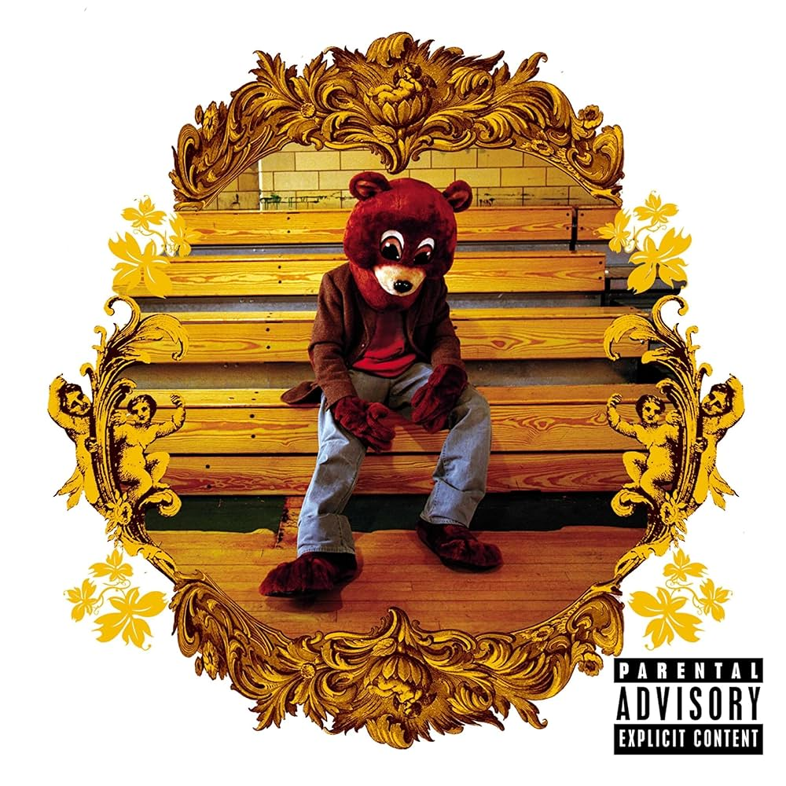

The College Dropout é o álbum de estréia do artista americano de hip-hop Kanye West, lançado em 10 de fevereiro de 2004, pela Roc-A-Fella Records. Foi gravado durante um período de quatro anos, começando em 1999. Antes do lançamento do álbum, West tinha trabalhado em The Blueprint, do rapper Jay-Z, de 2001, que mostrou seu estilo melódico e soulful da produção do hip hop. Produzido inteiramente por West, The College Dropout conta com a participação musical de Jay-Z, John Legend, Ervin "EP" Pope, Miri Ben-Ari, Syleena Johnson, e Ken Lewis. Descartando a persona gangster então dominante no hip hop, as letras de West sobre os temas do álbum preocupação da família, religião, auto-consciência, do materialismo e lutas pessoais.